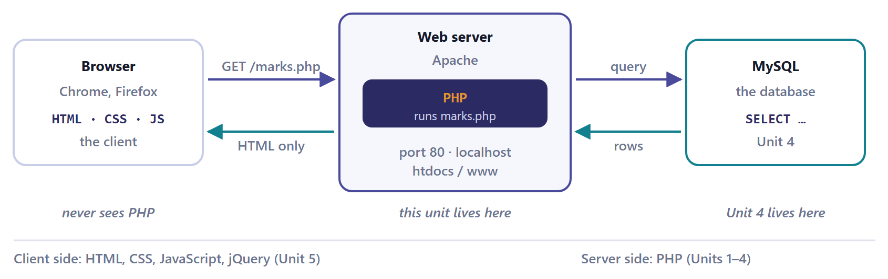

Unit 1: Introduction to PHP¶
This unit introduces PHP, the language in which the rest of the course is written. It starts with what a server-side language is and what it is not, takes you through installing a local server and running a first file, and then covers the language itself: syntax, variables and constants, the eight data types, arrays, operators, decisions, loops, functions, and the splitting of a program across files.
Everything in the later units (forms, strings, databases, JSON) is built from these constructs, so it is worth reading this unit slowly and running every example. It corresponds to Unit 1 of the course, Introduction to PHP, which is allotted 7 lecture hours.
Learning outcomes
Work through this unit and you should be able to do all of the following without looking anything up.
- Explain what a server-side language is, and say exactly which parts of a request PHP touches and which parts it never sees.
- Write, save and run a PHP file, and read the error message when it does not run.
- Declare variables and constants, and say which of the eight types a value has.
- Build indexed, associative and multidimensional arrays, and walk them with
foreach. - Predict the result of any expression, including the ones where PHP quietly converts a string into a number — and say why
==and===disagree. - Choose between
if,switchandmatch, and betweenwhile,forandforeach, and justify the choice.
1.1 What PHP does, and where it runs¶
The idea, first
You already know HTML and CSS. Those are files the server hands over unchanged: the same bytes reach every visitor, and the page cannot know who asked, cannot remember anything, and cannot look anything up. That is the ceiling this course removes.
PHP is a program that runs on the server, before the reply is sent. The browser asks for marks.php; the server notices the .php, runs the file through PHP, and sends the result — which is ordinary HTML. The browser never sees a line of PHP. Choose "View source" on a PHP-generated page and there is no PHP in it, which is exactly why passwords may sit in a PHP file and must never sit in JavaScript.
So PHP's whole job is to build a string of HTML and hand it over. Everything in this unit — variables, arrays, loops, conditions — exists to make building that string depend on something: on who asked, on what they typed, on what is in the database. A loop over a database result is an HTML table that grows when the data grows. That is the entire trick, and the rest is detail.

Where the name comes from
PHP began in 1994 as Rasmus Lerdorf's "Personal Home Page Tools". The name now stands for PHP: Hypertext Preprocessor — a recursive acronym, and a fair description: it processes a file before the hypertext is sent.
1.2 Getting a server and running your first file¶
The listings in this book can be read without a server, but your practical file and your examination will use a real one. Set up the real thing once, now, and keep it.
Install XAMPP¶
- Get XAMPP from apachefriends.org and install it. It bundles Apache (the web server), MySQL/MariaDB (the database), PHP and Perl — the X is for cross-platform.
- Open the XAMPP Control Panel and press Start next to Apache and MySQL. Both should turn green.
- Find the
htdocsfolder — on Windows it is usuallyC:\xampp\htdocs. Everything you want the server to serve lives here. - Make a folder inside it for your work, say
htdocs\ge5b. - Open http://localhost/ge5b/ in a browser.
The mistake everybody makes once
Opening the file by double-clicking it, so the address bar reads file:///C:/xampp/htdocs/ge5b/hello.php. The browser then shows your PHP source code, or offers to save the file, because nothing ran it. The address must start with http://localhost/. That is the difference between opening a file and asking a server for a page.
Your first file¶
Save this as htdocs\ge5b\hello.php and visit http://localhost/ge5b/hello.php.
Listing 1.1. hello.php — the first program
<!doctype html>
<html>
<head><title>My first PHP page</title></head>
<body>
<h1>Hello from the server</h1>
<?php
$name = "Riya";
echo "<p>Good morning, $name.</p>";
echo "<p>This page was built at " . date("H:i:s") . ".</p>";
?>
<p>This last line is plain HTML again.</p>
</body>
</html>
Output sent to the browser:
<!doctype html>
<html>
<head><title>My first PHP page</title></head>
<body>
<h1>Hello from the server</h1>
<p>Good morning, Riya.</p><p>This page was built at 09:41:07.</p>
<p>This last line is plain HTML again.</p>
</body>
</html>
The output is exactly what the server sends down the wire, and the browser then renders it. It contains no PHP at all. The time shown is the time at which the page was built, so it changes with every request.
What the visitor sees and what View source shows
What a visitor sees is the browser's rendering of the output above, and what "View source" would show them is that output itself. The PHP block has vanished from both and been replaced by its output. Everything else passed through untouched. That, mechanically, is all PHP does.
1.3 Basic syntax¶
The tags¶
PHP code lives between <?php and ?>. Outside those tags, the file is sent out as-is. A file may switch between the two as often as it likes.
| Form | Means | Use it? |
|---|---|---|
<?php … ?> |
The standard opening and closing tag | Always |
<?= $x ?> |
Short echo tag; identical to <?php echo $x; ?> |
Yes, inside HTML templates — it is always enabled since PHP 5.4 |
<? … ?> |
Short open tag | No. It depends on a setting that is off by default and it clashes with XML |
File ends with no ?> |
Perfectly legal in a file that is all PHP | Yes — preferred, because a stray blank line after ?> gets sent to the browser and breaks header() later |
Statements, semicolons and comments¶
Every statement ends with a semicolon. The last statement before a closing ?> may omit it, but do not rely on that. Whitespace is free; PHP does not care about indentation, though the next person to read your code will.
Listing 1.2. Comments, echo and print
<?php
// A single-line comment, to the end of the line.
# This also works, and is a leftover from shell scripting.
/* A block comment
over several lines. */
echo "echo takes several arguments: ", 1 + 1, "\n";
print "print takes exactly one, and returns 1.\n";
$used = print "print is an expression\n";
echo "print returned $used\n";
echo "Nothing after a closing tag is PHP's business.\n";
Output:
echo takes several arguments: 2
print takes exactly one, and returns 1.
print is an expression
print returned 1
Nothing after a closing tag is PHP's business.
Deleting a semicolon from this listing produces a parse error. PHP reports the line where it first noticed the problem, which is usually the line after the missing semicolon.
echo |
print |
|
|---|---|---|
| Arguments | One or many, comma separated | Exactly one |
| Returns | Nothing (it is a language construct, not a function) | 1, so it can sit inside an expression |
| Speed | Marginally faster; nobody has ever noticed | — |
| In practice | Use echo |
Use it when you need a value, which is almost never |
Case sensitivity — the rule people get wrong¶
| Case-insensitive (both work) | Case-sensitive (must match) |
|---|---|
Keywords: IF, if, While |
Variable names: $name and $Name are two different variables |
Function names: strlen(), STRLEN() |
Constants defined with define(), unless you ask otherwise |
| Class names | Array keys: $a["x"] ≠ $a["X"] |
Listing 1.3. Case sensitivity, demonstrated
<?php
$name = "Aman";
ECHO "Keywords do not care about case.\n"; // fine
echo STRTOUPPER("nor do function names"), "\n"; // fine
echo "But variables do: [$Name]\n"; // a different, empty variable
Output:
Keywords do not care about case.
NOR DO FUNCTION NAMES
Warning: Undefined variable $Name in case.php on line 7
But variables do: []
The warning is PHP telling you that $Name was never given a value. This single rule accounts for a large share of "my page is blank" problems.
1.4 Defining variables and constants¶
Variables¶
A variable is a name for a value. In PHP the name always starts with $, then a letter or underscore, then any letters, digits or underscores. There is no declaration step and no type to write: assigning a value creates the variable, and assigning a different kind of value later is allowed.
Rule: Valid variable names
$name ✓ $_total ✓ $roll2 ✓ $firstName ✓$2roll ✗ (starts with a digit) $first name ✗ (space) $first-name ✗ (a hyphen is the minus operator)
Listing 1.4. Variables: create, change, inspect
<?php
$roll = 2231045; // an integer
$name = "Zoya Khan"; // a string
$marks = 78.5; // a float
$passed = true; // a boolean
echo "$name ($roll) scored $marks\n\n";
// Assigning again simply replaces the value — and may change the type.
$marks = "seventy-eight";
var_dump($marks);
// Copying takes a copy: $a and $b are independent afterwards.
$a = 10;
$b = $a;
$b = 99;
echo "\n\$a is $a and \$b is $b\n";
// Everything about a value, at a glance:
var_dump($roll, $passed, null);
Output:
Zoya Khan (2231045) scored 78.5
string(13) "seventy-eight"
$a is 10 and $b is 99
int(2231045)
bool(true)
NULL
var_dump() is the tool to reach for whenever you are not sure what you have: it prints the type and the value, and for strings it prints the length too.
Assignment copies, and that matters later
$b = $a copies the value. This is true for numbers, strings, booleans and arrays — PHP arrays are value types, unlike JavaScript arrays or Python lists. Objects are the exception; they are handled by reference. The array section below shows the difference, and it catches everyone once.
Constants¶
A constant is a name whose value is fixed for the run of the script. Two ways to make one, and note that a constant has no $.
Listing 1.5. Two ways to define a constant
<?php
define("COLLEGE", "Example College"); // works anywhere, even inside an if
const UNIVERSITY = "Example University"; // compile time, top level only
define("PASS_MARK", 40);
echo COLLEGE . ", " . UNIVERSITY . "\n";
echo "Pass mark is " . PASS_MARK . "\n";
// Constants are not interpolated into strings — this prints the word:
echo "Pass mark is PASS_MARK\n";
var_dump(defined("PASS_MARK"), defined("NOPE"));
// PHP defines plenty of its own:
echo "PHP version: ", PHP_VERSION, "\n";
echo "Largest int: ", PHP_INT_MAX, "\n";
echo "Line ending constant is ", strlen(PHP_EOL), " character long\n";
// PASS_MARK = 50; // <- uncomment: Parse error, and rightly so
Output:
Example College, Example University
Pass mark is 40
Pass mark is PASS_MARK
bool(true)
bool(false)
PHP version: 8.2.0
Largest int: 9223372036854775807
Line ending constant is 1 character long
Uncommenting the last line of the listing gives a parse error, and rightly so: assigning to a constant is exactly what a constant forbids.
| Variable | Constant | |
|---|---|---|
| Written | $passMark |
PASS_MARK |
| Can change | Yes | No |
| Scope | Local to the function unless declared global |
Global everywhere, automatically |
| In a double-quoted string | Interpolated | Not interpolated — concatenate it |
| Convention | $camelCase or $snake_case |
UPPER_SNAKE_CASE |
1.5 Data types¶
PHP has eight types, in three groups. You never write the type down; PHP decides from the value, which is called dynamic typing.
| Group | Type | Example | Notes |
|---|---|---|---|
| Scalar (one value) |
int |
42, -7, 0x1A, 0b1011 |
64-bit on any machine you will meet; PHP_INT_MAX is 9223372036854775807 |
float |
3.14, 1.2e3, .5 |
Also called double. Never compare two floats with == |
|
string |
'hi', "hi $name" |
A sequence of bytes; Unit 2 is entirely about these | |
bool |
true, false |
Case-insensitive: TRUE works too |
|
| Compound (many values) |
array |
[1, 2, 3], ["name" => "Ana"] |
An ordered map. Covered below |
object |
new mysqli(...) |
Used in Unit 4; classes of your own are outside this course | |
| Special | NULL |
null |
The type of a variable with no value. Exactly one possible value |
resource |
a file handle | A handle to something outside PHP; you will rarely name it |
Listing 1.6. What type is this?
<?php
$values = [42, 3.14, "42", "3.14 rupees", true, false, null, [1, 2], 7/2, 10/5];
foreach ($values as $v) {
printf("%-16s => %-8s ", var_export($v, true), gettype($v));
var_dump($v);
}
Output:
42 => integer int(42)
3.14 => double float(3.14)
'42' => string string(2) "42"
'3.14 rupees' => string string(11) "3.14 rupees"
true => boolean bool(true)
false => boolean bool(false)
NULL => NULL NULL
array (
0 => 1,
1 => 2,
) => array array(2) {
[0]=>
int(1)
[1]=>
int(2)
}
3.5 => double float(3.5)
2 => integer int(2)
gettype() gives a word; var_dump() gives the word, the value and, for strings, the length in bytes. Changing the values changes the types reported.
Two results worth staring at
7/2 gives the float 3.5 — PHP does not do integer division with /; use intdiv(7, 2) for that. And 10/5 gives the integer 2, because PHP returns an int when the division comes out exact. So the type of a division depends on the values, not on the operator.
Type juggling: PHP converting behind your back¶
When an operator wants a type it has not been given, PHP converts. This is convenient and it is the source of most surprises in the language, so learn the table.
| Value | as bool |
as int |
as string |
|---|---|---|---|
0 |
false | 0 | "0" |
1, -3, 0.5 |
true | 1, -3, 0 | "1", "-3", "0.5" |
"" (empty string) |
false | 0 | "" |
"0" |
false | 0 | "0" |
"0.0", "00", " " |
true | 0, 0, 0 | unchanged |
"abc" |
true | 0 (with a warning in arithmetic) | "abc" |
"12abc" |
true | 12 (with a warning) | "12abc" |
[] (empty array) |
false | 0 | "Array" + notice |
[0] |
true | 1 | "Array" + notice |
null |
false | 0 | "" |
The seven falsy values
false, 0, 0.0, "", "0", [] and null. Everything else is truthy — including the string "false", the string "0.0" and the array [0]. The one that bites is "0": a student who types 0 into a form sends the string "0", and if ($_POST['marks']) then quietly treats it as empty.
Listing 1.7. Falsy values, all together
<?php
$tests = [0, 1, -1, 0.0, "", "0", "0.0", "00", " ", "false", "abc", [], [0], null];
echo str_pad("value", 12), str_pad("if()", 8), str_pad("empty()", 10), "isset()\n";
echo str_repeat("-", 40), "\n";
foreach ($tests as $t) {
echo str_pad(var_export($t, true), 12);
echo str_pad($t ? "TRUE" : "false", 8);
echo str_pad(empty($t) ? "TRUE" : "false", 10);
echo isset($t) ? "TRUE" : "false";
echo "\n";
}
Output:
value if() empty() isset()
----------------------------------------
0 false TRUE TRUE
1 TRUE false TRUE
-1 TRUE false TRUE
0 false TRUE TRUE
'' false TRUE TRUE
'0' false TRUE TRUE
'0.0' TRUE false TRUE
'00' TRUE false TRUE
' ' TRUE false TRUE
'false' TRUE false TRUE
'abc' TRUE false TRUE
array (
) false TRUE TRUE
array (
0 => 0,
)TRUE false TRUE
NULL false TRUE false
This is the table above, generated. If you remember only one line from this unit, remember that "0" is falsy and "0.0" is not.
Casting: converting on purpose¶
Listing 1.8. Explicit casts
<?php
$s = "45.9 kg";
var_dump((int) $s); // 45 — stops at the first non-numeric character
var_dump((float) $s); // 45.9
var_dump((bool) $s); // true
var_dump((string) 45.9); // "45.9"
var_dump((array) "solo");// ["solo"]
// The function forms do the same thing and read better in a chain:
var_dump(intval("2231045"), floatval("78.5"), strval(99), boolval("0"));
// intval() also takes a base — useful for form data in hex or binary:
var_dump(intval("ff", 16), intval("1011", 2));
// Checking, rather than converting:
var_dump(is_numeric("78.5"), is_numeric("78.5 kg"), is_int(5), is_string("5"));
Output:
int(45)
float(45.9)
bool(true)
string(4) "45.9"
array(1) {
[0]=>
string(4) "solo"
}
int(2231045)
float(78.5)
string(2) "99"
bool(false)
int(255)
int(11)
bool(true)
bool(false)
bool(true)
bool(true)
An explicit cast never warns — you have told PHP you meant it. That is the difference between (int)$x and $x + 0.
1.6 Arrays¶
An array in PHP is not a list — it is an ordered map from keys to values. The keys may be integers or strings, mixed freely, and the order is the order you inserted them. Everything called a list, dictionary, stack, queue or record in another language is this one structure here.
Indexed arrays¶
Listing 1.9. Indexed arrays
<?php
$subjects = ["PHP", "MySQL", "jQuery"]; // modern
$old = array("PHP", "MySQL", "jQuery"); // identical, older syntax
echo $subjects[0], "\n"; // PHP — counting starts at 0
echo count($subjects), "\n"; // 3
$subjects[] = "JSON"; // append: the next integer key, so 3
$subjects[9] = "AJAX"; // you may skip: key 9 exists, 4..8 do not
$subjects[] = "Sessions"; // the next key is now 10, not 4
print_r($subjects);
echo "\nLast key is ", array_key_last($subjects), "\n";
echo "Is there a key 5? ", isset($subjects[5]) ? "yes" : "no", "\n";
Output:
PHP
3
Array
(
[0] => PHP
[1] => MySQL
[2] => jQuery
[3] => JSON
[9] => AJAX
[10] => Sessions
)
Last key is 10
Is there a key 5? no
[] is the modern syntax; array() is the old one and still appears in every textbook. They are identical.
Associative arrays¶
Give the keys yourself and the array becomes a record. This is the shape every database row arrives in, so it is worth being fluent.
Listing 1.10. Associative arrays
<?php
$student = [
"roll" => 2231045,
"name" => "Zoya Khan",
"course" => "Computer Science (Honours)",
"marks" => 78.5,
];
echo $student["name"], " scored ", $student["marks"], "\n";
$student["grade"] = "A"; // add a new key
$student["marks"] = 82; // overwrite an existing one
unset($student["course"]); // remove one
print_r($student);
echo "\nKeys: ", implode(", ", array_keys($student)), "\n";
echo "Values: ", implode(", ", array_values($student)), "\n";
// A missing key: warning, and null.
echo "\n", $student["email"] ?? "(no email on file)", "\n";
Output:
Zoya Khan scored 78.5
Array
(
[roll] => 2231045
[name] => Zoya Khan
[marks] => 82
[grade] => A
)
Keys: roll, name, marks, grade
Values: 2231045, Zoya Khan, 82, A
(no email on file)
Note the arrow: key => value. Also note that a missing key is a warning and gives null, not a crash — which is why isset() and ?? matter.
Multidimensional arrays¶
A value in an array may itself be an array. A table of students is an array of associative arrays — exactly what a SELECT returns in Unit 4.
Listing 1.11. A table as an array of rows
<?php
$students = [
["roll" => 2231045, "name" => "Zoya Khan", "marks" => 82],
["roll" => 2231046, "name" => "Aman Verma", "marks" => 67],
["roll" => 2231047, "name" => "Riya Singh", "marks" => 91],
];
echo "<h3>Class list</h3>";
echo "<table>";
echo "<tr><th>Roll</th><th>Name</th><th>Marks</th><th>Result</th></tr>";
foreach ($students as $s) {
$result = $s["marks"] >= 40 ? "Pass" : "Fail";
echo "<tr>";
echo "<td>{$s['roll']}</td>";
echo "<td>{$s['name']}</td>";
echo "<td>{$s['marks']}</td>";
echo "<td>$result</td>";
echo "</tr>";
}
echo "</table>";
$total = array_sum(array_column($students, "marks"));
echo "<p>Class average: " . round($total / count($students), 2) . "</p>";
Output sent to the browser:
<h3>Class list</h3><table><tr><th>Roll</th><th>Name</th><th>Marks</th><th>Result</th></tr><tr><td>2231045</td><td>Zoya Khan</td><td>82</td><td>Pass</td></tr><tr><td>2231046</td><td>Aman Verma</td><td>67</td><td>Pass</td></tr><tr><td>2231047</td><td>Riya Singh</td><td>91</td><td>Pass</td></tr></table><p>Class average: 80</p>
This is the shape of a result set. In Unit 4 the same loop will run over rows fetched from MySQL, and the HTML below will not change at all.
Curly braces inside a string
"{$s['roll']}" — the braces are needed because the key is quoted. Without them you would write "$s[roll]", with the key unquoted, which also works but reads badly and breaks the moment the key has a space in it. Use the braces.
The array functions you will actually use¶
| Function | Does | Example |
|---|---|---|
count($a) |
How many elements | count([1,2,3]) → 3 |
array_push($a, $v) / $a[] = $v |
Append | the second form is preferred |
array_pop($a) |
Remove and return the last | a stack |
array_shift($a) / array_unshift($a,$v) |
Remove from / add to the front | a queue |
in_array($v, $a) |
Is this value present? | returns true/false |
array_search($v, $a) |
Which key holds it? | returns the key, or false |
array_keys($a) / array_values($a) |
Just the keys / just the values | renumbers from 0 |
array_merge($a, $b) |
Join two arrays | string keys overwrite, integer keys renumber |
array_slice($a, 2, 3) |
A piece of it | used for pagination in Unit 4 |
implode(", ", $a) |
Array → string | the opposite of explode |
array_sum / array_product |
Add / multiply everything | totals |
array_column($rows, "name") |
One column out of a table | invaluable with database rows |
array_unique($a) |
Drop duplicates | keeps the first, preserves keys |
sort, rsort |
Sort by value, renumber the keys | for indexed arrays |
asort, arsort |
Sort by value, keep the keys | for associative arrays |
ksort, krsort |
Sort by key | |
usort($a, $fn) |
Sort by your own rule | the callback returns -1, 0 or 1 |
Listing 1.12. Sorting: which function keeps the keys?
<?php
$marks = ["Zoya" => 82, "Aman" => 67, "Riya" => 91, "Dev" => 55];
$a = $marks; sort($a);
echo "sort() — value order, keys thrown away:\n"; print_r($a);
$b = $marks; asort($b);
echo "\nasort() — value order, keys kept:\n"; print_r($b);
$c = $marks; arsort($c);
echo "\narsort() — highest first, keys kept (the class rank list):\n"; print_r($c);
$d = $marks; ksort($d);
echo "\nksort() — alphabetical by name:\n"; print_r($d);
// Your own rule: longest name first, then alphabetical
$names = array_keys($marks);
usort($names, function ($x, $y) {
return (strlen($y) <=> strlen($x)) ?: ($x <=> $y);
});
echo "\nusort() with a custom rule:\n"; print_r($names);
Output:
sort() — value order, keys thrown away:
Array
(
[0] => 55
[1] => 67
[2] => 82
[3] => 91
)
asort() — value order, keys kept:
Array
(
[Dev] => 55
[Aman] => 67
[Zoya] => 82
[Riya] => 91
)
arsort() — highest first, keys kept (the class rank list):
Array
(
[Riya] => 91
[Zoya] => 82
[Aman] => 67
[Dev] => 55
)
ksort() — alphabetical by name:
Array
(
[Aman] => 67
[Dev] => 55
[Riya] => 91
[Zoya] => 82
)
usort() with a custom rule:
Array
(
[0] => Aman
[1] => Riya
[2] => Zoya
[3] => Dev
)
The rule to memorise: the a in asort is for associative — it keeps keys attached. Plain sort() throws the keys away and renumbers from zero, which destroys an associative array.
Listing 1.13. Arrays are copied, not shared
<?php
$a = [1, 2, 3];
$b = $a; // a copy
$b[] = 4;
echo "a has ", count($a), " elements, b has ", count($b), "\n";
$c = &$a; // a reference — the same array under two names
$c[] = 99;
echo "after \$c[] = 99, a has ", count($a), " elements\n";
// Passing to a function also copies, unless the parameter is declared &
function addItem($arr) { $arr[] = "x"; return count($arr); }
function addItemRef(&$arr) { $arr[] = "x"; return count($arr); }
$list = ["p", "q"];
addItem($list); echo "after addItem: ", count($list), "\n";
addItemRef($list); echo "after addItemRef: ", count($list), "\n";
Output:
a has 3 elements, b has 4
after $c[] = 99, a has 4 elements
after addItem: 2
after addItemRef: 3
This is the difference between PHP and JavaScript that trips people up. If you genuinely want to share, write $b = &$a — but you rarely do.
1.7 Operators and expressions¶
Arithmetic¶
| Operator | Name | $a = 7, $b = 2 |
|---|---|---|
+ - * |
add, subtract, multiply | 9, 5, 14 |
/ |
divide — float unless exact | 3.5 |
% |
modulus — integers only, sign of the left operand | 1 |
** |
exponent | 49 |
intdiv($a,$b) |
integer division (a function) | 3 |
Assignment, and the shorthand forms¶
| Shorthand | Means | Notes |
|---|---|---|
$a += 5 |
$a = $a + 5 |
also -=, *=, /=, %=, **= |
$s .= "x" |
$s = $s . "x" |
the one you will use constantly when building HTML |
$a ??= 5 |
assign only if $a is null or unset |
PHP 7.4+; perfect for form defaults |
$i++, ++$i |
add one | post- returns the old value, pre- returns the new one |
Comparison — the part that is examined¶
| Operator | True when | Result for "5" and 5 |
|---|---|---|
== |
equal after type juggling | true |
=== |
equal and the same type | false |
!= or <> |
not equal, loosely | false |
!== |
not equal, or a different type | true |
< > <= >= |
ordering, loosely | — |
<=> |
spaceship: −1, 0 or 1 | 0 |
Use === whenever false could be a real answer
strpos("hello", "h") returns 0 — the position — and 0 == false is true. So if (strpos($s, $x) == false) reports "not found" for a match at the very start. Writing === false fixes it. The same trap waits in array_search().
Listing 1.14. The strpos trap, and the fix
<?php
$email = "hod@ex.ac.in";
// Wrong: 'h' is at position 0, and 0 == false
if (strpos($email, "hod") == false) {
echo "WRONG: it says 'hod' is not there\n";
}
// Right:
if (strpos($email, "hod") === false) {
echo "not found\n";
} else {
echo "RIGHT: found at position ", strpos($email, "hod"), "\n";
}
// Since PHP 8 there is a function with no trap at all:
var_dump(str_contains($email, "hod"));
Output:
WRONG: it says 'hod' is not there
RIGHT: found at position 0
bool(true)
This is the single most examined gotcha in PHP. The rule: any function that can return 0 or false must be tested with ===.
Logical operators¶
| Operator | True when | Note |
|---|---|---|
&& / and |
both | Short-circuits: if the left is false the right is never evaluated |
\|\| / or |
either | Short-circuits the other way |
! |
the opposite | |
xor |
exactly one | rare |
&& and and mean the same thing but bind differently: and binds looser than =, so $ok = true and false; assigns true. Use && and || and the problem never arises.
Listing 1.15. Short-circuiting is a feature, not a detail
<?php
function noisy($label, $value) {
echo " (evaluated $label)\n";
return $value;
}
echo "false && ... :\n";
$r = noisy("left", false) && noisy("right", true); // right is skipped
echo "\ntrue || ... :\n";
$r = noisy("left", true) || noisy("right", true); // right is skipped
echo "\nThe practical use — guarding an array key:\n";
$data = ["marks" => 45];
if (isset($data["bonus"]) && $data["bonus"] > 10) {
echo " bonus applies\n";
} else {
echo " no bonus, and no warning either\n";
}
echo "\nAnd the precedence trap:\n";
$a = true and false; // = binds tighter than 'and'
$b = true && false;
var_dump($a, $b);
Output:
false && ... :
(evaluated left)
true || ... :
(evaluated left)
The practical use — guarding an array key:
no bonus, and no warning either
And the precedence trap:
bool(false)
bool(false)
Short-circuiting is what makes isset($a['k']) && $a['k'] > 5 safe: if the key is missing, the second half never runs, so there is no warning.
Precedence, briefly¶
Highest to lowest, keeping only what you will meet: ** → ++ -- and casts → * / % → + - → . (since PHP 8) → < <= > >= → == != === !== → && → || → ?? → ? : → = += .= → and → or. When in any doubt, use brackets: they cost nothing and they are read by humans.
1.8 Decision making statements¶
if / elseif / else¶
Listing 1.16. Grading with if / elseif / else
<?php
$marks = 78;
if ($marks >= 90) {
$grade = "O";
} elseif ($marks >= 80) {
$grade = "A+";
} elseif ($marks >= 70) {
$grade = "A";
} elseif ($marks >= 60) {
$grade = "B+";
} elseif ($marks >= 40) {
$grade = "P";
} else {
$grade = "F";
}
echo "$marks marks -> grade $grade\n";
// Written the other way round, everybody gets a P:
if ($marks >= 40) { $wrong = "P"; }
elseif ($marks >= 70) { $wrong = "A"; }
elseif ($marks >= 90) { $wrong = "O"; }
echo "Tests in the wrong order give: $wrong\n";
Output:
78 marks -> grade A
Tests in the wrong order give: P
The order of the branches matters. The first true condition wins and the rest are skipped, so the tests must go from the strictest to the loosest. Changing $marks moves the result to a different branch.
elseif or else if?
Both work with braces. Only elseif works with the colon syntax (if (…): … elseif (…): … endif;), so prefer elseif and you never have to think about it.
The alternative syntax, for templates¶
Inside HTML, braces get lost among the tags. PHP offers a colon form that names its own end, and it is much easier to read in a template. You will use this constantly in Units 3 and 4.
Listing 1.17. Alternative syntax inside HTML
<?php $marks = 78; $name = "Zoya"; ?>
<h3>Result</h3>
<?php if ($marks >= 40): ?>
<p style="color:green">Congratulations <?= $name ?>, you passed with <?= $marks ?>.</p>
<?php elseif ($marks > 0): ?>
<p style="color:#c0392b">Sorry <?= $name ?>, you scored <?= $marks ?>.</p>
<?php else: ?>
<p>No result recorded.</p>
<?php endif; ?>
<hr>
<?php
// The same thing with braces and echo, for comparison:
if ($marks >= 40) {
echo "<p>Braces version: passed with $marks.</p>";
} else {
echo "<p>Braces version: failed.</p>";
}
?>
Output sent to the browser:
<h3>Result</h3>
<p style="color:green">Congratulations Zoya, you passed with 78.</p>
<hr>
<p>Braces version: passed with 78.</p>
Compare the two halves. In a real template the second form wins every time, because endif tells you what is closing — a bare } twenty lines down does not.
switch¶
Listing 1.18. switch, and why break matters
<?php
$grade = "A";
switch ($grade) {
case "O":
case "A+":
echo "Outstanding\n";
break;
case "A":
echo "Very good\n";
break;
case "B+":
case "B":
echo "Good\n";
break;
default:
echo "Grade not recognised\n";
}
// Deliberate fall-through, grouping cases — the only respectable use:
$day = 6;
switch ($day) {
case 6:
case 7:
echo "Weekend\n";
break;
default:
echo "Working day\n";
}
// The trap: switch uses loose comparison.
$value = 0;
switch ($value) {
case "hello": echo "matched the string!\n"; break; // PHP 5/7 did match here
case 0: echo "matched zero\n"; break;
}
Output:
Very good
Weekend
matched zero
Deleting a break makes execution fall through into the next case, which is occasionally useful and usually a bug. Note also that switch compares with ==, not ===.
match — PHP 8's tidier switch¶
Listing 1.19. match is an expression, and it is strict
<?php
$grade = "A";
$remark = match ($grade) {
"O", "A+" => "Outstanding",
"A" => "Very good",
"B+", "B" => "Good",
default => "Grade not recognised",
};
echo $remark, "\n";
// It is strict, so this does NOT match "0":
$v = 0;
echo match (true) {
$v === "0" => "the string zero\n",
$v === 0 => "the integer zero\n",
default => "something else\n",
};
Output:
Very good
the integer zero
Three differences from switch: it is an expression so it returns a value, it compares with ===, and there is no fall-through so no break. Not in the course, but it turns up in modern code.
The ternary and null-coalescing operators¶
Listing 1.20. ?: and ?? — and how they differ
<?php
$marks = 35;
$result = $marks >= 40 ? "Pass" : "Fail";
echo "$result\n";
// Shorthand ?: gives the left side when it is truthy
$name = "";
echo ($name ?: "Anonymous"), "\n";
// ?? gives the left side unless it is null or undefined
$input = ["marks" => 0, "name" => null];
echo "with ?: -> ", ($input["marks"] ?: "missing"), "\n"; // "missing" — wrong!
echo "with ?? -> ", ($input["marks"] ?? "missing"), "\n"; // 0 — right
echo "name ?? -> ", ($input["name"] ?? "Anonymous"), "\n";
echo "email ?? -> ", ($input["email"] ?? "none"), "\n"; // no warning at all
// They chain:
$display = $input["nickname"] ?? $input["name"] ?? "Guest";
echo "chained -> $display\n";
Output:
Fail
Anonymous
with ?: -> missing
with ?? -> 0
name ?? -> Anonymous
email ?? -> none
chained -> Guest
?: asks "is it truthy?"; ?? asks "does it exist and is it not null?". For form input, ?? is almost always the one you want, because a submitted 0 is a real answer.
1.9 Constructs for iterations¶
Four loops. They can all do the same jobs, but each one is the natural fit for a different question.
| Loop | Use when | Shape |
|---|---|---|
while |
You do not know how many times — you have a condition | while (cond) { … } |
do…while |
The body must run at least once | do { … } while (cond); |
for |
You are counting, and you know the range | for (init; cond; step) { … } |
foreach |
You are walking an array — the one you will use most | foreach ($arr as $k => $v) { … } |
Listing 1.21. All four loops, same output
<?php
echo "while: ";
$i = 1;
while ($i <= 5) { echo $i, " "; $i++; }
echo "\ndo-while: ";
$i = 1;
do { echo $i, " "; $i++; } while ($i <= 5);
echo "\nfor: ";
for ($i = 1; $i <= 5; $i++) { echo $i, " "; }
echo "\nforeach: ";
foreach (range(1, 5) as $i) { echo $i, " "; }
echo "\n\nThe difference between while and do-while, when the condition starts false:\n";
$n = 10;
while ($n < 5) { echo " while body ran\n"; break; }
do { echo " do-while body ran once anyway\n"; } while ($n < 5);
Output:
while: 1 2 3 4 5
do-while: 1 2 3 4 5
for: 1 2 3 4 5
foreach: 1 2 3 4 5
The difference between while and do-while, when the condition starts false:
do-while body ran once anyway
Four ways to print 1 to 5. Notice how much of the for loop is bookkeeping, and how foreach has none at all — that is why it wins whenever there is an array.
foreach, properly¶
Listing 1.22. foreach: values, keys, and by reference
<?php
$marks = ["Zoya" => 82, "Aman" => 67, "Riya" => 91];
echo "values only:\n";
foreach ($marks as $m) { echo " $m\n"; }
echo "\nkey and value:\n";
foreach ($marks as $name => $m) { echo " $name: $m\n"; }
echo "\nmodifying by reference (add 5 grace marks):\n";
foreach ($marks as &$m) { $m += 5; }
unset($m); // <- always, after a by-reference foreach
print_r($marks);
echo "\nnested, for a table:\n";
$class = [
"Sem 5" => ["Zoya" => 82, "Aman" => 67],
"Sem 3" => ["Riya" => 91],
];
foreach ($class as $sem => $students) {
echo " $sem\n";
foreach ($students as $name => $m) {
echo " $name -> $m\n";
}
}
Output:
values only:
82
67
91
key and value:
Zoya: 82
Aman: 67
Riya: 91
modifying by reference (add 5 grace marks):
Array
(
[Zoya] => 87
[Aman] => 72
[Riya] => 96
)
nested, for a table:
Sem 5
Zoya -> 82
Aman -> 67
Sem 3
Riya -> 91
The unset($m) after a by-reference loop is not superstition. Without it, $m is still a reference to the last element, and the next loop that reuses the name overwrites that element, which is a famous PHP bug. Deleting the unset makes the bug show in the output.
break and continue¶
Listing 1.23. break, continue, and their level argument
<?php
echo "continue skips the rest of this turn:\n ";
for ($i = 1; $i <= 10; $i++) {
if ($i % 2 !== 0) continue; // odd -> skip
echo $i, " ";
}
echo "\n\nbreak leaves the loop entirely:\n ";
foreach ([4, 8, 15, 16, 23, 42] as $n) {
if ($n > 15) break;
echo $n, " ";
}
echo "\n\nbreak 2 leaves both loops:\n";
for ($i = 1; $i <= 3; $i++) {
for ($j = 1; $j <= 3; $j++) {
echo " i=$i j=$j\n";
if ($i * $j >= 4) break 2;
}
}
echo " out\n";
Output:
continue skips the rest of this turn:
2 4 6 8 10
break leaves the loop entirely:
4 8 15
break 2 leaves both loops:
i=1 j=1
i=1 j=2
i=1 j=3
i=2 j=1
i=2 j=2
out
break 2 leaves two loops at once. It is rare, it is legal, and it is examined.
Loops that build HTML¶
This is what loops are for in a web program: turning a list of data into a list of tags. Everything in Units 3 and 4 is a variation on it.
Listing 1.24. A loop that builds a table and a dropdown
<?php
$courses = ["CS Hon", "BA Economics", "BCom Hons", "BA English"];
$chosen = "BCom Hons";
$fees = [
"CS Hon" => 21000,
"BA Economics" => 14500,
"BCom Hons" => 15800,
];
?>
<h3>Pick a course</h3>
<select name="course">
<?php foreach ($courses as $c): ?>
<option value="<?= $c ?>" <?= $c === $chosen ? "selected" : "" ?>><?= $c ?></option>
<?php endforeach; ?>
</select>
<h3>Fee structure</h3>
<table>
<tr><th>Course</th><th>Fee</th></tr>
<?php foreach ($fees as $course => $amount): ?>
<tr>
<td><?= $course ?></td>
<td style="text-align:right">₹ <?= number_format($amount) ?></td>
</tr>
<?php endforeach; ?>
<tr>
<th>Total</th>
<th style="text-align:right">₹ <?= number_format(array_sum($fees)) ?></th>
</tr>
</table>
Output sent to the browser:
<h3>Pick a course</h3>
<select name="course">
<option value="CS Hon" >CS Hon</option>
<option value="BA Economics" >BA Economics</option>
<option value="BCom Hons" selected>BCom Hons</option>
<option value="BA English" >BA English</option>
</select>
<h3>Fee structure</h3>
<table>
<tr><th>Course</th><th>Fee</th></tr>
<tr>
<td>CS Hon</td>
<td style="text-align:right">₹ 21,000</td>
</tr>
<tr>
<td>BA Economics</td>
<td style="text-align:right">₹ 14,500</td>
</tr>
<tr>
<td>BCom Hons</td>
<td style="text-align:right">₹ 15,800</td>
</tr>
<tr>
<th>Total</th>
<th style="text-align:right">₹ 51,300</th>
</tr>
</table>
These are two patterns you will reuse endlessly: a <tr> per row, and an <option> per choice with the current one marked selected.
Nested loops: the pattern questions¶
Listing 1.25. The four patterns every practical asks for
<?php
$n = 5;
echo "1. Right triangle of stars\n";
for ($i = 1; $i <= $n; $i++) {
echo str_repeat("*", $i), "\n";
}
echo "\n2. The number pyramid (a practical favourite)\n";
for ($i = 1; $i <= $n; $i++) {
for ($j = 1; $j <= $i; $j++) {
echo $i;
}
echo "\n";
}
echo "\n3. Centred pyramid\n";
for ($i = 1; $i <= $n; $i++) {
echo str_repeat(" ", $n - $i), str_repeat("*", 2 * $i - 1), "\n";
}
echo "\n4. Multiplication table\n";
for ($i = 1; $i <= 10; $i++) {
printf("%2d x %d = %3d\n", $i, 7, $i * 7);
}
Output:
1. Right triangle of stars
*
**
***
****
*****
2. The number pyramid (a practical favourite)
1
22
333
4444
55555
3. Centred pyramid
*
***
*****
*******
*********
4. Multiplication table
1 x 7 = 7
2 x 7 = 14
3 x 7 = 21
4 x 7 = 28
5 x 7 = 35
6 x 7 = 42
7 x 7 = 49
8 x 7 = 56
9 x 7 = 63
10 x 7 = 70
Every one of these patterns is one loop for the rows and one for the columns; only the inner range and what is printed change. Changing $n changes the size of each pattern.
1.10 Functions¶
The course does not list functions under Unit 1, but every remaining unit uses them and the practical list expects them, so they belong here. A function is a named block you can call, with inputs and one output.
Listing 1.26. Declaring and calling
<?php
// 1. Simple
function greet($name) {
return "Namaste, $name";
}
echo greet("Riya"), "\n";
// 2. A default value — the parameter becomes optional
function area($length, $breadth = 1) {
return $length * $breadth;
}
echo area(5, 4), " and ", area(5), "\n";
// 3. Several returns, and an early exit
function grade($m) {
if ($m >= 90) return "O";
if ($m >= 80) return "A+";
if ($m >= 40) return "P";
return "F";
}
echo grade(85), "\n";
// 4. Types may be declared, and it is good practice
function average(array $nums): float {
return count($nums) ? array_sum($nums) / count($nums) : 0.0;
}
echo average([82, 67, 91]), "\n";
// 5. Any number of arguments
function total(...$nums) { return array_sum($nums); }
echo total(1, 2, 3, 4), "\n";
// 6. Called before it is declared — this is fine
echo shout("it works"), "\n";
function shout($s) { return strtoupper($s) . "!"; }
Output:
Namaste, Riya
20 and 5
A+
80
10
IT WORKS!
Note the last one: a function may be called before the line that declares it, because PHP reads the whole file before running any of it.
Scope: the rule that surprises people¶
Listing 1.27. Variables inside a function are private
<?php
$college = "Example College";
function tryToRead() {
// $college is NOT visible here
echo "inside: [", $college ?? "nothing", "]\n";
}
tryToRead();
function withGlobal() {
global $college;
echo "with global: [$college]\n";
}
withGlobal();
function passedIn($c) {
echo "passed in: [$c]\n"; // the version to prefer
}
passedIn($college);
// static remembers between calls, but stays private
function counter() {
static $n = 0;
return ++$n;
}
echo counter(), counter(), counter(), "\n";
Output:
inside: [nothing]
with global: [Example College]
passed in: [Example College]
123
PHP is stricter than most languages here: a function cannot see a global variable unless you say global or pass it in. Passing it in is almost always the better answer.
1.11 Splitting a program across files¶
One file per page stops being sensible the moment two pages need the same thing — a header, a menu, a database password. PHP has four words for pulling one file into another, and from Unit 3 onwards you will use them constantly.
| Statement | If the file is missing | If it was already pulled in |
|---|---|---|
include "x.php"; |
Warning, and the script carries on | includes it again |
require "x.php"; |
Fatal error, and the script stops | includes it again |
include_once "x.php"; |
Warning | skips it |
require_once "x.php"; |
Fatal error | skips it |
The rule is simple: if the page cannot work without the file — a database connection, a function library — use require, so a missing file fails loudly instead of producing a half-built page. For something optional, include. Use the _once forms for anything that declares functions, since declaring the same function twice is a fatal error.
Listing 1.28. Three files, one page
index.php
<?php
require_once "config.php"; // constants and settings
require_once "functions.php"; // the helpers
include "header.php"; // the shared top of every page
?>
<p>Today the pass mark is <?= PASS_MARK ?>.</p>
<p>78 marks is grade <b><?= grade(78) ?></b>.</p>
<p>35 marks is grade <b><?= grade(35) ?></b>.</p>
<?php
// A missing optional file: a warning, and the page still works.
include "sidebar.php";
echo "<p>The page finished.</p>";
config.php
<?php
// Settings in one place. No closing tag, so no stray newline can escape.
define("PASS_MARK", 40);
$college = "Example College";
functions.php
<?php
function grade($m) {
if ($m >= 90) return "O";
if ($m >= 80) return "A+";
if ($m >= 60) return "B";
if ($m >= PASS_MARK) return "P";
return "F";
}
header.php
<h3><?= $college ?></h3>
<p style="color:#666">Advanced Web Programming · Course notes</p>
<hr>
Output sent to the browser:
<h3>Example College</h3>
<p style="color:#666">Advanced Web Programming · Course notes</p>
<hr>
<p>Today the pass mark is 40.</p>
<p>78 marks is grade <b>B</b>.</p>
<p>35 marks is grade <b>F</b>.</p>
Warning: include(sidebar.php): Failed to open stream: No such file or directory in index.php on line 14
<p>The page finished.</p>
The listing consists of three files. $college is set in config.php and used in header.php: an included file shares the variables of the file that included it, which is exactly why require "db.php" in Unit 4 makes $conn available.
An included file shares the including file's variables
This is the whole reason the pattern works. config.php sets $college; header.php can read it, because include behaves as though the text of the file were pasted in at that point. The same rule means a variable set inside a function is not visible to a file included elsewhere — scope still applies.
Never include a path that came from the user
include $_GET["page"] . ".php"; looks convenient and is a well-known way to get a server taken over: the visitor chooses which file runs. If a page must be chosen by a parameter, check it against a whitelist first — the same defence as Unit 3's sort links.
1.12 Solved problems¶
Example 1.1: What is printed, and why?
Problem. State the exact output of $a = "10"; $b = 10; var_dump($a == $b, $a === $b, $a <=> $b, "10" == "1e1"); in PHP 8.
Step 1 — $a == $b
One side is a string, the other an integer. PHP checks whether the string is numeric. "10" is, so both sides are compared as numbers: 10 == 10.
Step 2 — $a === $b
Identity compares the type first. string is not int, so the answer is false without ever looking at the values.
Step 3 — $a <=> $b
The spaceship uses the same loose rules as == and returns −1, 0 or 1. The values are equal numerically, so 0.
Step 4 — "10" == "1e1"
Both are strings, so PHP asks whether both are numeric. They are — 1e1 is scientific notation for 10 — so they are compared as numbers and are equal. This surprises people, and it is why comparing user input with == is unsafe.
Answer. bool(true) bool(false) int(0) bool(true)
Example 1.2: Sum of the digits of a number
Problem. Write a PHP script that reads a number and prints the sum of its digits, in two ways: with arithmetic, and with string functions. For 4729 the answer is 22.
Step 1 — the arithmetic way
$n % 10 gives the last digit; intdiv($n, 10) removes it. Repeat until nothing is left.
Step 2 — the string way
A number cast to a string is a sequence of digit characters. str_split makes an array of them and array_sum adds them, converting each back to a number on the way.
Step 3 — which to prefer
The string version is shorter and reads better. The arithmetic version is what an examiner usually wants, because it shows you understand the decimal system rather than the library. Know both.
Answer. 22
Listing 1.29. Both solutions, running
<?php
function digitSumArithmetic($n) {
$sum = 0;
$n = abs($n);
while ($n > 0) {
$sum += $n % 10;
$n = intdiv($n, 10);
}
return $sum;
}
function digitSumString($n) {
return array_sum(str_split((string) abs($n)));
}
foreach ([4729, 100, 9, 999999] as $n) {
printf("%-8d arithmetic: %-4d string: %d\n",
$n, digitSumArithmetic($n), digitSumString($n));
}
Output:
4729 arithmetic: 22 string: 22
100 arithmetic: 1 string: 1
9 arithmetic: 9 string: 9
999999 arithmetic: 54 string: 54
Example 1.3: Second largest without sorting
Problem. Given $a = [45, 92, 67, 92, 31, 88], print the second largest distinct value. Do not use sort().
Step 1 — why "distinct" changes the problem
92 appears twice. If duplicates counted, the second largest would also be 92. The question asks for distinct values, so the answer is 88.
Step 2 — one pass, two variables
Keep $first and $second. For each value: if it beats $first, the old first slides down into second; else if it beats $second and is not equal to $first, it becomes the new second.
Step 3 — the starting values
Start both at PHP_INT_MIN so that any real value beats them. Starting at 0 breaks the moment the data contains negative numbers — a classic hidden bug.
Answer. 88
Listing 1.30. Second largest, one pass
<?php
function secondLargest(array $a) {
$first = $second = PHP_INT_MIN;
foreach ($a as $v) {
if ($v > $first) {
$second = $first;
$first = $v;
} elseif ($v > $second && $v != $first) {
$second = $v;
}
}
return $second === PHP_INT_MIN ? null : $second;
}
print_r([
secondLargest([45, 92, 67, 92, 31, 88]),
secondLargest([-5, -2, -9]),
secondLargest([7, 7, 7]),
]);
// The library answer, for comparison:
$a = [45, 92, 67, 92, 31, 88];
$u = array_unique($a);
rsort($u);
echo "\nvia array_unique + rsort: ", $u[1], "\n";
Output:
Array
(
[0] => 88
[1] => -5
[2] =>
)
via array_unique + rsort: 88
Example 1.4: Counting words in a sentence
Problem. Count how many times each word appears in "the quick brown fox jumps over the lazy dog the end", printing the commonest first.
Step 1 — split into words
explode(" ", $s) splits on single spaces; preg_split('/\s+/', $s) is safer because it copes with double spaces and tabs.
Step 2 — count with an associative array
The word is the key, the count is the value. $counts[$w] ?? 0 gives 0 for a word not seen yet, so $counts[$w] = ($counts[$w] ?? 0) + 1; is the whole counter. array_count_values() does this in one call, but writing it out is the exam answer.
Step 3 — sort by count, keeping the words
arsort(): descending, keys preserved. Plain rsort() would throw the words away and leave you with a list of numbers.
Answer. the → 3, then every other word once
Listing 1.31. Word frequency
<?php
$s = "the quick brown fox jumps over the lazy dog the end";
$words = preg_split('/\s+/', strtolower(trim($s)));
$counts = [];
foreach ($words as $w) {
$counts[$w] = ($counts[$w] ?? 0) + 1;
}
arsort($counts);
foreach ($counts as $word => $n) {
printf("%-8s %s (%d)\n", $word, str_repeat("#", $n), $n);
}
echo "\nTotal words: ", count($words), ", distinct: ", count($counts), "\n";
Output:
the ### (3)
quick # (1)
brown # (1)
fox # (1)
jumps # (1)
over # (1)
lazy # (1)
dog # (1)
end # (1)
Total words: 11, distinct: 9
1.13 Where this shows up in the rest of the course¶
- Unit 3 — every form field is an array element.
$_POSTis an associative array whose keys are thenameattributes of your inputs. Everything you just learned about associative arrays,isset()and??is what makes form handling safe. - Unit 4 — every database row is an associative array.
mysqli_fetch_assoc()hands back exactly the shape used in Listing 1.11, "A table as an array of rows", and thewhileloop that walks the result set is thewhileloop from this unit. - Unit 5 — JSON is an array, encoded.
json_encode()turns a PHP array into the text jQuery expects. An indexed array becomes a JSON array, an associative one becomes a JSON object — a distinction that only makes sense once you know PHP arrays are both. - Everywhere — loops build the HTML. A menu, a table, a set of radio buttons, a paginated list: each is a loop with tags inside it. Nothing more elaborate ever appears.
1.14 Common mistakes to avoid¶
- Do not open PHP files with
file://. If the address bar does not start withhttp://localhost/, nothing has run. - Do not forget the
$.name = "x";is a parse error, andecho name;looks for a constant, not a variable. - Do not put a
$on a constant.define("PI", 3.14)thenecho PI;— not$PI. - Do not use
==wherefalseand0must be told apart, especially withstrpos()andarray_search(). - Do not use
sort()on an associative array — it discards the keys.asort()andarsort()keep them. - Do not test form input with
if ($_POST['x']): the string"0"is falsy, so a legitimate zero looks empty. Useisset(), or!== "". - Do not forget
unset($v)afterforeach ($a as &$v). The dangling reference corrupts the array in the next loop that reuses the name. - Do not assume
/gives an integer.7/2is 3.5;intdiv(7,2)is 3. - Do not leave a blank line after the final
?>in an included file — it is output, and it will breakheader()in Unit 3. - Do not expect a variable defined outside a function to be visible inside it. PHP has no automatic access to globals.
- Do not build an
includepath out of user input. Whitelist the allowed pages instead.
1.15 Summary¶
The key points of the unit, each stated as something you should now be able to do.
- You can say precisely what PHP does: it runs on the server, before the reply, and its only product is text. The browser never receives PHP, which is why credentials may live in a
.phpfile and never in JavaScript. - You can write, save and reach a PHP file — under
htdocs, throughhttp://localhost/, never by double-clicking — and you know that seeing your own source code in the browser means the server was bypassed. - You can use both tag forms, know that
<?=is the template-friendly one, and know why the closing tag is left off a pure-PHP file. - You can declare variables (case-sensitive,
$-prefixed, no type) and constants (no$, global, uppercase by convention), and say which of the two is interpolated into a double-quoted string. - You can name the eight types, use
gettype()andvar_dump()to find out what you actually have, and recite the seven falsy values — with"0"falsy and"0.0"truthy. - You can build indexed, associative and multidimensional arrays; you know they are ordered maps rather than lists, that assignment copies them, and which sort function keeps the keys.
- You can evaluate any expression, including PHP 8's comparison rules, and you know why
strpos()demands=== false. - You can choose among
if,switch,matchand the ternary, write the colon syntax that keeps templates readable, and tell?:from??. - You can write all four loops, break out of nested ones with
break 2, and — the thing this unit exists for — use a loop to turn data into HTML. - You can write functions with defaults, type declarations and variadic arguments, and you know that PHP functions cannot see globals unless told to.
- You can split a program across files with
includeandrequire, say which of the four to reach for and why, and explain that an included file shares the variables of the file that included it — the fact that makes a shareddb.phpwork at all.
1.16 Exercises¶
Try each exercise on paper before you open its answer.
Quick check — syntax¶
Exercise 1.1. What does the browser receive when this file is requested through http://localhost/?
<p>Total: <?php echo 5 * 20; ?> marks</p>
- (a)
<p>Total: 100 marks</p> - (b)
<p>Total: <?php echo 5 * 20; ?> marks</p> - (c)
<p>Total: 5 * 20 marks</p> - (d) Nothing —
echoonly works inside a full HTML document
Answer
The answer is (a). The PHP block is replaced by its output. Nothing else in the line is touched.
- (a) Correct. PHP replaces the whole block, tags included, with whatever it echoed.
- (b) That is what would arrive if the file were opened with file:// and never ran through PHP — a common symptom of the wrong address.
- (c) PHP evaluates the expression; it does not print the source of it.
- (d) echo writes to the output wherever it is.
Exercise 1.2. Which of these is not a valid PHP comment?
- (a)
// note - (b)
# note - (c)
/* note */ - (d)
<!-- note -->
Answer
The answer is (d).
- (a) Valid — C++ style, runs to the end of the line.
- (b) Valid — shell style, also to the end of the line.
- (c) Valid — a block comment, and it may span lines.
- (d) Correct. That is an HTML comment. Inside a PHP block it is a syntax error; outside one it is sent to the browser, where anyone can read it with View Source.
Exercise 1.3. Why do experienced programmers leave off the final ?> in a file that contains only PHP?
- (a) Because a blank line or space after it is sent to the browser, which breaks any later
header()orsession_start()call - (b) Because the closing tag is deprecated
- (c) Because it makes the file run faster
- (d) Because PHP will not parse a file that has one
Answer
The answer is (a).
- (a) Correct. Exactly. "Headers already sent" is nearly always a stray newline after a closing tag in an included file.
- (b) It is not deprecated; it is required whenever HTML follows.
- (c) The difference is unmeasurable.
- (d) It parses perfectly well.
Exercise 1.4. $total and $Total in the same script are…
- (a) two different variables
- (b) the same variable
- (c) a syntax error
- (d) the same variable, with a warning
Answer
The answer is (a).
- (a) Correct. Variable names are case-sensitive. Function and keyword names are not.
- (b) That is true of function names, not variable names.
- (c) Both are legal names.
- (d) There is no such warning.
Predict the output — types and juggling¶
Exercise 1.5. What does this script print?
<?php
var_dump(0 == "a");
var_dump("1" == "01");
var_dump("10" == "1e1");
var_dump(100 == "1e2");
Hint: PHP 8 changed the first one. When a number meets a non-numeric string, the number becomes a string.
Answer
The script prints:
bool(false)
bool(true)
bool(true)
bool(true)
In PHP 8, comparing a number with a non-numeric string converts the number to a string, so 0 == "a" is "0" == "a", which is false. (In PHP 5 and 7 it was true, and that is where a lot of old exam answers come from.) Two numeric strings are compared numerically, which is why "1" == "01" and "10" == "1e1" are both true.
Exercise 1.6. What does this script print?
<?php
$a = "5";
$b = 5;
var_dump($a == $b);
var_dump($a === $b);
var_dump($a <=> $b);
Hint: One compares values, one compares values and types.
Answer
The script prints:
bool(true)
bool(false)
int(0)
== converts before comparing, === refuses to. The spaceship <=> returns -1, 0 or 1 and uses the loose rules, so it gives 0.
Exercise 1.7. What does this script print?
<?php
echo 7 / 2, "\n";
echo intdiv(7, 2), "\n";
echo 7 % 2, "\n";
echo -7 % 2, "\n";
echo 2 ** 10, "\n";
Hint: One of these keeps the sign of the left operand.
Answer
The script prints:
3.5
3
1
-1
1024
/ gives a float unless the division is exact. % takes the sign of the left operand, so -7 % 2 is -1, not 1 — different from Python.
Exercise 1.8. What does this script print?
<?php
var_dump((int) "12abc");
var_dump((int) "abc12");
var_dump((bool) "0");
var_dump((bool) "0.0");
var_dump((bool) []);
Hint: A cast to int reads from the left and stops at the first character that cannot be part of a number.
Answer
The script prints:
int(12)
int(0)
bool(false)
bool(true)
bool(false)
"12abc" starts with a number so it gives 12; "abc12" does not, so it gives 0. "0" is the one string that is falsy; "0.0" is a different string and is truthy.
Exercise 1.9. What does this script print?
<?php
$x = "10";
$x = $x + 5;
var_dump($x);
$y = "10";
$y = $y . 5;
var_dump($y);
Hint: + is always arithmetic in PHP; . is always concatenation.
Answer
The script prints:
int(15)
string(3) "105"
Unlike JavaScript, + in PHP never joins strings. That is the whole reason PHP has a separate . operator.
Write it — array practice¶
Exercise 1.10. The array $marks holds five marks. Print the highest, the lowest and the average rounded to two decimal places, each on its own line and nothing else — in that order.
Expected output for the starter data:915576.6. There are functions for all three; you do not need a loop.
Starting point:
<?php
$marks = [82, 67, 91, 55, 88];
// your code here
Your script is tested with these cases:
| Case | Expected output |
|---|---|
| the given array | 91 55 76.6 |
Answer
A solution:
<?php
$marks = [82, 67, 91, 55, 88];
echo max($marks), "\n";
echo min($marks), "\n";
echo round(array_sum($marks) / count($marks), 2), "\n";
max and min accept an array directly. The average is the sum over the count — and round($x, 2) drops the trailing zero, so 76.60 prints as 76.6.
Notice that none of this needed a loop. Reaching for an array function first, and a loop only when no function fits, is the habit to build.
Exercise 1.11. $students is a table of rows. Print the name of every student who scored 60 or more, one per line, highest mark first.
Expected output:RiyaZoyaAman
Starting point:
<?php
$students = [
["name" => "Zoya", "marks" => 82],
["name" => "Aman", "marks" => 67],
["name" => "Riya", "marks" => 91],
["name" => "Dev", "marks" => 55],
];
// your code here
Your script is tested with these cases:
| Case | Expected output |
|---|---|
| the class table | Riya Zoya Aman |
Answer
A solution:
<?php
$students = [
["name" => "Zoya", "marks" => 82],
["name" => "Aman", "marks" => 67],
["name" => "Riya", "marks" => 91],
["name" => "Dev", "marks" => 55],
];
usort($students, function ($a, $b) {
return $b["marks"] <=> $a["marks"];
});
foreach ($students as $s) {
if ($s["marks"] >= 60) {
echo $s["name"], "\n";
}
}
Sort first, then filter — doing it the other way round works too. $b <=> $a (rather than $a <=> $b) is what makes it descending.
This is exactly what ORDER BY marks DESC and WHERE marks >= 60 will do for you in Unit 4 — in the database, where it belongs.
Quick check — operators¶
Exercise 1.12. What does var_dump("abc" == 0); print in PHP 8?
- (a)
bool(false) - (b)
bool(true) - (c)
int(0) - (d) A TypeError
Answer
The answer is (a).
- (a) Correct. Correct for PHP 8. The number is converted to the string "0" and compared as text, so it is false. In PHP 5/7 the string became 0 and the answer was true — check which version an exam question assumes.
- (b) That was the PHP 5 and 7 answer. PHP 8 reversed it.
- (c) == always yields a boolean.
- (d) Comparison never throws; only arithmetic on a non-numeric string does in PHP 8.
Exercise 1.13. $a = 5; echo $a++ + ++$a; prints:
- (a)
12 - (b)
11 - (c)
10 - (d)
13
Answer
The answer is (a).
- (a) Correct. Right.
$a++hands over 5 and leaves $a at 6;++$araises it to 7 and hands over 7; 5 + 7 = 12. - (b) That would be 5 + 6 — it forgets that the first ++ already changed $a.
- (c) That ignores both increments.
- (d) That would be 6 + 7, using the post-increment's new value, which is not what post-increment returns.
Exercise 1.14. Which test correctly finds that $needle is absent from $haystack?
- (a)
if (strpos($haystack, $needle) === false) - (b)
if (strpos($haystack, $needle) == false) - (c)
if (!strpos($haystack, $needle)) - (d)
if (strpos($haystack, $needle) == -1)
Answer
The answer is (a).
- (a) Correct. Right. Only === can tell the position 0 apart from a failure.
- (b) This reports 'absent' when the match is at position 0, because 0 == false.
- (c) Same bug — ! converts 0 to true.
- (d) PHP returns false, not -1. That is the JavaScript convention.
Exercise 1.15. After $x = null; $x ??= 10; $x ??= 20; the value of $x is:
- (a)
10 - (b)
20 - (c)
null - (d)
30
Answer
The answer is (a).
- (a) Correct. The first ??= sees null and assigns 10. The second sees 10, which is not null, so it does nothing.
- (b) ??= only assigns when the left side is null or undefined.
- (c) The first assignment does happen.
- (d) ??= assigns; it does not add.
Exercise 1.16. Which pair is not equal under == in PHP 8?
- (a)
"1"and"01" - (b)
"10"and"1e1" - (c)
0and"" - (d)
nullandfalse
Answer
The answer is (c).
- (a) Both are numeric strings, so they are compared as numbers: equal.
- (b) "1e1" is a numeric string meaning 10, so these are equal.
- (c) Correct. In PHP 8, 0 == "" is false — the empty string is not a numeric string, so 0 becomes "0", and "0" != "". This changed in PHP 8 too.
- (d) Both are falsy and == treats them as equal.
Fill the blanks — a grading function¶
Exercise 1.17. Complete this grading script. It must print Riya scored 91 and gets grade O.
The blanks are marked ___1___, ___2___ and so on.
<?php
$name = "Riya";
$marks = 91;
___1___ ($marks >= 90) {
$grade = "O";
} ___2___ ($marks >= 80) {
$grade = "A+";
} ___3___ {
$grade = "B";
}
echo "$name scored $marks and gets grade ___4___";
Answer
- Blank 1:
if - Blank 2:
elseif(alsoelse if) - Blank 3:
else - Blank 4:
$grade
<?php
$name = "Riya";
$marks = 91;
if ($marks >= 90) {
$grade = "O";
} elseif ($marks >= 80) {
$grade = "A+";
} else {
$grade = "B";
}
echo "$name scored $marks and gets grade $grade";
It prints:
Riya scored 91 and gets grade O
Inside a double-quoted string a variable is written with its dollar sign and PHP substitutes the value — that is interpolation, and Unit 2 goes into it properly.
Put it in order — factorial with a for loop¶
Exercise 1.18. These lines compute the factorial of 5 and print 5! = 120. Put them into working order.
}
echo "$n! = $factorial";
<?php
$n = 5;
$factorial = 1;
$factorial = $factorial * $i;
for ($i = 1; $i <= $n; $i++) {
Answer
The lines in working order:
<?php
$n = 5;
$factorial = 1;
for ($i = 1; $i <= $n; $i++) {
$factorial = $factorial * $i;
}
echo "$n! = $factorial";
It prints:
5! = 120
The accumulator must start at 1 and must be set before the loop. Starting it at 0 gives 0, and declaring it inside the loop resets it every turn.
Predict the output — loops¶
Exercise 1.19. What does this script print?
<?php
for ($i = 0; $i < 3; $i++) {
for ($j = 0; $j < 3; $j++) {
if ($j == 1) continue;
if ($i == 2) break 2;
echo "$i$j ";
}
}
Hint: continue skips the rest of the inner turn; break 2 leaves both loops.
Answer
The script prints:
00 02 10 12
j=1 is always skipped. When i reaches 2, the very first inner turn (j=0) hits break 2 and everything stops before printing.
Exercise 1.20. What does this script print?
<?php
$a = [1, 2, 3];
foreach ($a as &$v) { $v = $v * 2; }
foreach ($a as $v) { }
print_r($a);
Hint: The famous one. After the first loop, $v is still a reference to the last element.
Answer
The script prints:
Array
(
[0] => 2
[1] => 4
[2] => 6
)
The second loop assigns each value to $v — which is still a reference to $a[2]. So $a[2] becomes 2, then 4, then finally whatever the last assignment put there. An unset($v); between the loops prevents it.
Exercise 1.21. What does this script print?
<?php
$i = 0;
while ($i < 3):
echo $i;
$i++;
endwhile;
echo "|";
$j = 5;
do {
echo $j;
$j++;
} while ($j < 3);
Hint: Look carefully at the second loop's condition before it starts.
Answer
The script prints:
012|5
A do…while always runs its body once, whatever the condition says — that is the entire reason it exists.
Exercise 1.22. What does this script print?
<?php
$sum = 0;
for ($i = 1; $i <= 100; $i++) {
if ($i % 3 != 0) continue;
if ($i > 20) break;
$sum += $i;
}
echo $sum;
Hint: Only multiples of three survive the continue, and the loop stops once past 20.
Answer
The script prints:
63
3 + 6 + 9 + 12 + 15 + 18 = 63. At 21 the break fires, so 21 itself is never added.
Write it — functions¶
Exercise 1.23. Write a function isPrime($n) that returns true when $n is prime and false otherwise, then print every prime from 1 to 30 separated by single spaces (with no trailing space).
Expected output: 2 3 5 7 11 13 17 19 23 29. Remember that 1 is not prime, and that you only need to test divisors up to √n.
Starting point:
<?php
function isPrime($n) {
// your code here
}
$primes = [];
for ($i = 1; $i <= 30; $i++) {
if (isPrime($i)) $primes[] = $i;
}
echo implode(" ", $primes);
Answer
A solution:
<?php
function isPrime($n) {
if ($n < 2) return false;
for ($i = 2; $i * $i <= $n; $i++) {
if ($n % $i == 0) return false;
}
return true;
}
$primes = [];
for ($i = 1; $i <= 30; $i++) {
if (isPrime($i)) $primes[] = $i;
}
echo implode(" ", $primes);
$i * $i <= $n is the same test as $i <= sqrt($n) but avoids a floating-point square root. Returning early from inside the loop is clearer than setting a flag.
implode on a collected array is how you avoid a trailing separator — building the string with .= $i . " " would leave a space at the end and fail the test.
Exercise 1.24. Write reverseNumber($n) that reverses the digits of an integer using arithmetic only — no strrev, no string functions at all. Print reverseNumber(12345).
Expected output: 54321. The technique: take the last digit with % 10, add it to the result after multiplying the result by 10, then drop the digit with intdiv($n, 10).
Starting point:
<?php
function reverseNumber($n) {
// your code here
}
echo reverseNumber(12345);
Answer
A solution:
<?php
function reverseNumber($n) {
$rev = 0;
while ($n > 0) {
$rev = $rev * 10 + $n % 10;
$n = intdiv($n, 10);
}
return $rev;
}
echo reverseNumber(12345);
Use intdiv(), not /: plain division would give a float and the loop would never reach exactly 0.
This is a standard exercise on the University practical list, and the examiner usually asks for the arithmetic version precisely to see whether you can do it without strrev().
Practice problems¶
Exercise 1.25. What is the output of echo 10 + "5 apples";, and what warning, if any, appears?
Answer
The output is 15. The string "5 apples" starts with a number, so PHP uses the leading 5 in the arithmetic. PHP 8 also issues a warning that a non-numeric value was encountered, because the rest of the string is not part of a number; the script carries on.
Exercise 1.26. Write a script that prints the multiplication table of a number held in a variable, formatted as 7 x 3 = 21 with the columns aligned. (Hint: printf with %2d and %3d.)
Answer
<?php
$n = 7;
for ($i = 1; $i <= 10; $i++) {
printf("%2d x %2d = %3d\n", $n, $i, $n * $i);
}
The output begins:
7 x 1 = 7
7 x 2 = 14
7 x 3 = 21
%2d pads an integer to two characters and %3d to three, so the columns stay aligned up to 7 x 10 = 70.
Exercise 1.27. Given $a = ["x" => 1, "y" => 2] and $b = ["y" => 20, "z" => 30], what does print_r(array_merge($a, $b)) print, and how does it differ from print_r($a + $b)?
Answer
array_merge($a, $b) $a + $b
Array Array
( (
[x] => 1 [x] => 1
[y] => 20 [y] => 2
[z] => 30 [z] => 30
) )
Both produce the keys x, y and z. For the key that occurs in both arrays, array_merge lets the later array win (y is 20), whereas the + operator keeps the value from the first array (y is 2).
Exercise 1.28. Write a function isArmstrong($n). An Armstrong number equals the sum of its digits, each raised to the number of digits (153 = 1³ + 5³ + 3³). Print all Armstrong numbers below 1000.
Answer
<?php
function isArmstrong(int $n): bool {
$digits = strlen((string) $n);
$sum = 0;
foreach (str_split((string) $n) as $d) {
$sum += $d ** $digits;
}
return $sum === $n;
}
for ($i = 1; $i < 1000; $i++) {
if (isArmstrong($i)) echo $i, " ";
}
1 2 3 4 5 6 7 8 9 153 370 371 407
The one-digit numbers qualify trivially, because each is its own first power.
Exercise 1.29. Explain in two sentences why $b = $a for arrays behaves differently from the same line in JavaScript.
Answer
In PHP an array is a value: $b = $a makes an independent copy, so changing $b afterwards leaves $a as it was. In JavaScript the same line copies only a reference to one array, so both names refer to the same data and a change made through either is seen through the other.
Exercise 1.30. Rewrite this for loop as a while loop and then as a foreach: for ($i = 0; $i < count($a); $i++) echo $a[$i];. Which is best, and why?
Answer
<?php
$a = [4, 8, 15];
// while
$i = 0;
while ($i < count($a)) {
echo $a[$i], " ";
$i++;
}
// foreach
foreach ($a as $v) {
echo $v, " ";
}
The foreach version is best. It has no counter to initialise, test or increment, so there is no off-by-one error to make; it does not call count() on every pass; and it works on arrays whose keys are not the numbers 0, 1, 2 …, where $a[$i] would fail.
Exercise 1.31. What is the difference between empty($x), isset($x) and is_null($x) when $x = 0, when $x = null and when $x was never assigned? Build the 3 × 3 table.
Answer
$x = 0 |
$x = null |
never assigned | |
|---|---|---|---|
empty($x) |
true | true | true |
isset($x) |
true | false | false |
is_null($x) |
false | true | true, with a warning (undefined variable) |
empty() asks "is it falsy, or missing?", so 0 counts as empty. isset() asks "does it exist and is it not null?", so 0 counts as set. is_null() asks only whether the value is null, and unlike the other two it is an ordinary function, so passing it a variable that does not exist produces a warning.
Exercise 1.32. Write a script that finds the GCD of two numbers with Euclid's algorithm, using a while loop and no recursion.
Answer
<?php
$a = 48;
$b = 18;
while ($b != 0) {
$t = $b;
$b = $a % $b;
$a = $t;
}
echo "GCD = $a";
GCD = 6
Each pass replaces the pair (a, b) by (b, a mod b), which has the same GCD, until the remainder is 0; the other number is then the answer. For 48 and 18 the pairs are (48, 18), (18, 12), (12, 6), (6, 0).
Examination questions¶
These are questions in the shapes this course uses, grouped by the marks they carry. A two-mark question wants a definition and one concrete example, a five-mark question wants structure, and a ten-mark question wants an answer with parts.
Two-mark questions¶
Exercise 1.33. (2 marks) What is PHP? Why is it called a server-side language?
Answer
PHP (a recursive acronym for PHP: Hypertext Preprocessor) is an open-source scripting language embedded in HTML and executed on the web server. The server runs the script and sends only its output — ordinary HTML — to the browser, which never receives any PHP.
That is what "server-side" means, and the practical consequence is that a database password may sit safely in a .php file but never in JavaScript.
Exercise 1.34. (2 marks) Differentiate echo and print.
Answer
echo |
print |
|
|---|---|---|
| Arguments | one or many, comma separated | exactly one |
| Return value | none | always 1, so it can be used in an expression |
| Example | echo "a", "b"; |
$x = print "a"; |
Both are language constructs rather than functions, so the brackets are optional.
Exercise 1.35. (2 marks) What is the difference between == and ===?
Answer
== is loose equality: it converts the operands to a common type and then compares. === is identity: it compares the type first, and returns false immediately if the types differ.
var_dump("5" == 5); // bool(true) — the string became a number
var_dump("5" === 5); // bool(false) — string is not int
Use === whenever false and 0 must be told apart — for example with strpos(), which returns 0 for a match at the very first character.
Exercise 1.36. (2 marks) List the data types in PHP.
Answer
Eight, in three groups.
- Scalar:
int,float(double),string,bool - Compound:
array,object - Special:
NULL,resource
PHP is dynamically typed — the type is decided by the value assigned, not declared — and gettype() or var_dump() reports it.
Exercise 1.37. (2 marks) How do you declare a constant? How does it differ from a variable?
Answer
define("PASS_MARK", 40); // works anywhere, even inside an if
const COLLEGE = "Example"; // top level only
echo PASS_MARK; // no dollar sign
A constant has no $, cannot be changed once set, is global everywhere without a global declaration, and is not substituted into a double-quoted string — it must be concatenated.
Exercise 1.38. (2 marks) Difference between include and require.
Answer
Both insert another file at that point. They differ only in what happens when the file is missing:
includeemits a warning and the script continues.requireraises a fatal error and the script stops.
So require is right for anything the page cannot work without — a database connection — and include for something optional. The _once variants refuse to include the same file twice, which matters for files that declare functions.
Exercise 1.39. (2 marks) What is type juggling? Give an example.
Answer
PHP converting a value to the type an operator needs, automatically.
echo "5" + 5; // 10 — the string became a number
echo "5" . 5; // "55" — the number became a string
var_dump((bool) "0"); // bool(false) — "0" is one of the falsy values
The seven falsy values are false, 0, 0.0, "", "0", [] and null.
Exercise 1.40. (2 marks) Which loop guarantees that its body runs at least once, and why?
Answer
do…while. It tests the condition after the body rather than before, so the body has already executed once by the time the condition is first evaluated.
$i = 10;
do { echo $i; } while ($i < 5); // prints 10 despite the condition being false
Five-mark questions¶
Exercise 1.41. (5 marks) Explain the different types of arrays in PHP with examples.
Answer
An array in PHP is an ordered map from keys to values; the keys may be integers or strings. Three usual shapes:
1. Indexed — automatic integer keys from 0:
$subjects = ["PHP", "MySQL", "jQuery"];
echo $subjects[0]; // PHP
2. Associative — keys you choose. This is the shape a database row arrives in:
$student = ["roll" => 2231045, "name" => "Zoya", "marks" => 82];
echo $student["name"]; // Zoya
3. Multidimensional — an array whose values are arrays, i.e. a table:
$class = [
["name" => "Zoya", "marks" => 82],
["name" => "Riya", "marks" => 91],
];
echo $class[1]["name"]; // Riya
foreach ($class as $row) {
echo $row["name"], " scored ", $row["marks"], "<br>";
}
Useful functions: count(), array_keys(), array_values(), in_array(), array_push(), implode(), and the sorts — sort() discards the keys while asort() keeps them.
Exercise 1.42. (5 marks) Explain the decision-making statements in PHP with syntax and examples.
Answer
if / elseif / else — the general form. The first true branch wins, so the tests must run from strictest to loosest:
if ($marks >= 90) { $grade = "O"; }
elseif ($marks >= 40) { $grade = "P"; }
else { $grade = "F"; }
switch — one value against several constants. Each case needs break, or execution falls through into the next:
switch ($grade) {
case "O":
case "A": echo "Excellent"; break;
default: echo "Not recognised";
}
Ternary — an if/else that yields a value: $r = $m >= 40 ? "Pass" : "Fail";
Null coalescing — the value unless it is null or missing: $name = $_POST["name"] ?? "Guest";
match (PHP 8) — like switch but it is an expression, compares with ===, and has no fall-through.
Exercise 1.43. (5 marks) Explain the looping constructs in PHP. When would you choose each?
Answer
| Loop | Syntax | Use when |
|---|---|---|
while |
while (cond) { } |
You have a condition but not a count |
do…while |
do { } while (cond); |
The body must run at least once |
for |
for (init; cond; step) { } |
You are counting over a known range |
foreach |
foreach ($a as $k => $v) { } |
Any array — the one used most |
for ($i = 1; $i <= 5; $i++) echo $i; // 12345
$marks = ["Zoya" => 82, "Riya" => 91];
foreach ($marks as $name => $m) echo "$name: $m<br>";
break leaves the loop; continue skips the rest of the current turn. Both take a number — break 2 leaves two nested loops at once.
Exercise 1.44. (5 marks) What is variable scope in PHP? Explain local, global and static with examples.
Answer
Local — a variable created inside a function exists only there:
function f() { $x = 5; }
f();
echo $x; // Warning: Undefined variable $x
Global — a variable declared outside every function is not visible inside one unless you say so. PHP is stricter than most languages here:
$college = "Example";
function show() {
global $college; // or: $GLOBALS["college"]
echo $college;
}
Passing the value in as a parameter is almost always better than global, because it makes the dependency visible.
Static — a local variable that keeps its value between calls:
function counter() {
static $n = 0;
return ++$n;
}
echo counter(), counter(), counter(); // 123
Superglobals ($_GET, $_POST, $_SESSION …) are the exception: they are visible everywhere with no declaration.
Ten-mark questions¶
Exercise 1.45. (10 marks) Explain how PHP works with a web server. Describe the request–response cycle, and write a program that shows PHP embedded in HTML.
Answer
The cycle, step by step.
- The browser requests a URL, say
http://localhost/marks.php. - Apache sees the
.phpextension and hands the file to the PHP interpreter instead of sending it. - PHP executes everything between
<?phpand?>, and passes everything outside those tags through unchanged. It may consult a database on the way. - PHP returns the result — plain HTML — to Apache.
- Apache sends that HTML to the browser, which renders it. The browser never receives any PHP; "View source" shows only the output.
Consequences worth stating. Credentials may live in a PHP file safely. The page can differ per visitor, per input and per database contents. And a file opened as file:///… instead of through http://localhost/ never runs at all — the browser shows the source code, which is the commonest beginner's error.
Program.
<!doctype html>
<html>
<head><title>Result</title></head>
<body>
<h1>Class result</h1>
<?php
$students = [
["name" => "Zoya", "marks" => 82],
["name" => "Kabir", "marks" => 38],
];
?>
<table border="1">
<tr><th>Name</th><th>Marks</th><th>Result</th></tr>
<?php foreach ($students as $s): ?>
<tr>
<td><?= htmlspecialchars($s["name"]) ?></td>
<td><?= $s["marks"] ?></td>
<td><?= $s["marks"] >= 40 ? "Pass" : "Fail" ?></td>
</tr>
<?php endforeach; ?>
</table>
</body>
</html>
Note the alternative syntax (foreach … endforeach) and the short echo tag <?=: both exist to keep a template readable when HTML and PHP are interleaved.